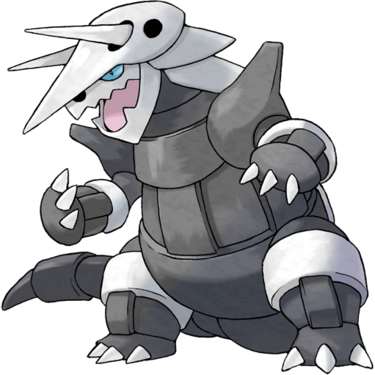

Quick Guide:
- Return to Thundercap Mountain and solve the Electric Fence Puzzle
- Explore the Maze Chamber
- Rescue a Lost Kid out of the mountain
Return to Thundercap
Now that you have Surf, there are a few key things you should do in Thundercap Mountain.
Items
| Items | |
|---|---|
| 1F | |
|
TM24 Thunderbolt (southwest area) |
 |
| 2F | |
|
Max Ether (southeast area) |
|
|
Electirizer (southeast area) |
|
|
Electric Seed (east area) |
|
| 3F | |
|
Protein (Main Cavern, northeast side) |
|
Head up to 2F and go to the southeast corner, where you will find a large underground lake.
Surf east across it until you come to a ladder leading to 3F.
It will take you up to the part of 3F that has the Ancient Tablet in it, this time on a side you haven’t been able to access yet.
Go north, and you’ll find a boulder puzzle.
This puzzle is a little complicated, so there are some step-by-step instructions you should follow.
Also, you should have previously pushed the extra boulder down the hole from the Electivire Chamber on 4F if you haven’t already.
Thundercap Boulder Puzzle
Step 1: The first move you should make is to push boulder A to the west.
Step 2: Then, push B boulder to the north.
Step 3: Push C boulder to the south.
Step 4: Then, push boulder D (which is actually boulder A, west of its starting position) to the south.
Step 5: Push boulder E to the west.
Step 6: Push boulder F to the south.
Step 7: Push boulder G to the north.
Step 8: Push boulder H all the way to the west.
Step 9: Clear the rocks with Rock Smash and push boulder I to the west.
Step 10: Push boulder I again to the north, on to the button.
This side of the puzzle is now complete.
The 2nd Boulder Puzzle
Go south and then west, jumping off the cliff, until you’re on the left side of the cavern and can see the other boulder puzzle.
To complete this one, just smash all the rocks here and move the southern boulder up to rest on top of the button.
Now that both boulders are on the buttons, the electric fence in the northwest of the chamber turns off.
This reveals your prize, a Manectite.
After the Puzzles
Now that that is taken care of, go to the ladder in the north of the chamber.
It will take you to a new area of 4F – the Maze Chamber.
Thundercap Mountain – 4F, Maze Chamber
{kind=link}
| Points of Interest | |
|---|---|
 |
Yellow Pokémon Witness |
 |
Lost Kid |
 |
Camper Phillip and Picnicker Tina |
 |
Dugtrio Attack |
 |
Hikers Dario and Daryl |
 |
Kid Drop-off Point |
 |
Youngster Benward and Lass Miriam |
| Exits and Passages | |
|---|---|
 |
Ladder Down to 3F Tablet Cave |
Items
| Items | |
|---|---|
|
Nugget (hidden) |
|
| Calcium | |
| Timer Ball | |
| TM73 Thunder Wave | |
| Rare Candy | |
| Thick Club | |
Trainers
| Trainers | |
|---|---|
| Camper Phillip and Picnicker Tina | |
|
Sandshrew Ground (Lv.41) |
|
|
Audino Normal (Lv.39) |
|
|
Snivy Grass (Lv.39) |
|
| Hikers Dario and Daryl | |
|
Kabuto Rock/Water (Lv.39) |
 |
|
Omastar Rock/Water (Lv.41) |
|
|
Aggron Steel/Rock (Lv.42) |
 |
| Camper Dwayne and Picnicker Martha | |
|
Dedenne Electric/Fairy (Lv.39) |
 |
|
Oshawott Water (Lv.40) |
 |
|
Tepig Fire (Lv.40) |
|
|
Wormadam Bug/Grass (Lv.41) |
|
| Youngster Benward and Lass Miriam | |
|
Raticate Normal (Lv.41) |
|
|
Buneary Normal (Lv.39) |
 |
|
Linoone Normal (Lv.39) |
 |
|
Clefairy Fairy (Lv.40) |
|
When you arrive in the chamber, cross the pond to the east with Surf.
Then continue on east until you hit a corner area.
From here, head north until you see an intersection.

Take note of where this is – you’ll need to come back here a little later.
For now, head east.
South of this T-junction is a man who saw a strange Pokémon around here, but you can’t help him yet if you don’t have the Advanced Digging and Diving Machine.
Go north and follow that tunnel around until you see a boy in a Pikachu outfit.
The Pikachu Boy
It’s Milo, and he’s stuck in this cave waiting for someone to lead him the way out.
Agree, and he’ll start following you. You will only be able to use your first three Pokémon in battle, and he will battle alongside you in Double Battles with his two Pikachu.
Note: You can’t Surf while he is following you, so you can’t simply go back across the pond.
Here’s the most efficient route to follow:

Follow the tunnel back to the previous intersection, and get rid of the rock blocking the way with Rock Smash.
Head north, and you’ll find an ambush waiting for you.
Phillip and Tina will give you a Double Battle. Once they’ve been defeated, head west to another intersection.
Break the rock and head north along the tunnel there. It will zigzag along north and west until you hit the very northern wall of the chamber.
Follow it west until you come to a T-junction.
From here, go south until you see an intersection with a smashable rock in the middle of it.
West of here is three more sets of Double Battles for you to fight, should you wish to.
However, the best way to get to the exit is to smash the rock and head down the east passage.
The passage will twist slightly, and there will be an intersection you need to pass with some dead ends, but eventually you will find your way to where the exit is.
You will see a smashable rock – get rid of it and go through the gap.
Milo will see the ladder and thank you for your help with TM73 Thunder Wave.
After Milo leaves, you’re free to keep exploring the chamber or jump south over the cliff and back to the ladder.
Your choice here based on how much you want to explore, but eventually our next step is to leave the mountain.
After Helping Milo
After all that, it is finally time to set out into the Great Desert.
But before you do, you’ll need to head to Dehara City and go to the intersection of four houses.
A Hiker in the southeast house has a special item you need to brave the desert.